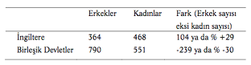
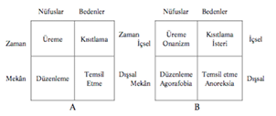

BÖLÜM 8 - BEDENİN YENİDEN KEŞFİ: BEDEN SOSYOLOJİSİ VE SOSYOBİYOLOJİ
Giriş
1Toplumbilimciler, her zaman, hem toplumbilimini hem de toplumu tanımlamakla çok meşgul olmuşlardır. Klasik kuramcılardan bunlar arasında en etkileyicisi, toplumsal gerçeklerle ilgili anlayışı Bölüm 2’de özetlenmiş olan Durkheim’dır. Durkheim’ın görüşleri şunları içerir, “eğer bireyden başlayacak olursak, topluluk içinde olup bitenlerden hiçbir şey anlayamayacağız” ve toplumsal gerçeklerin “biyolojik olaylarla karıştırılmaması gereklidir.” Durkheim’ın bireyden çok topluluğu vurgulamış olması hiçbir zaman tam kabul görmemiştir; böylece, simgesel etkileşim ve fenomenoloji bakış açılarına ilave olarak, şimdi akılsal seçim kuramcıları, topluluk davranışını ve “ortaya çıkan” toplumsal olayları anlamanın çok iyi bir yolunun, birey ile başlamak olduğunu savunmaktadırlar. Ancak son zamanlara kadar Durkheim’ın biyolojik olana karşı ilgisizliği, bir bütün olarak sosyolojik kuramda hazır bir yankı bulmuştur. Buraya kadar tartışılmış olan belli başlı bakış açılarının hepsi de simgeyi ve anlamı, değerleri ve normları vurgulamakta ortaktırlar. onları sosyolojik yapan şeylerden biri budur.
Son yıllarda, bu vurgulamaya hücum edilmiştir. Sosyoloji (ve antropoloji) fiziksel ve biyolojik olanı tamamıyla etkili bir şekilde göz ardı etmekle, toplumun esas itibarıyla simgesel olduğunu ve biyolojileri tarafından davranışları etkilenen bir et ve kandan oluşan hayvanlar dünyası yerine, tamamen fikirler ve çıkarlar tarafından kontrol edilmekte ve şekillenmekte olduğunu kabul etmekle eleştirilmiştir. Eleştiriciler, şimdiye kadar genellikle kabul edilenden çok daha önemli olarak gördükleri insan davranışının -Parsons’ın “organizma” düzeyi adını verdiği- biyolojik yönlerini de incelememiz gerektiğini ileri sürmektedirler.
Bedene ve bir biyolojik tür olan insana duyulan bu yeni ilgi, her ikisi de bu bölümde tartışılacak olan, birbirlerinden oldukça farklı iki şekilde kendini göstermiştir. Bunlardan birincisi, ağırlıkla fenomeno-loji ve kültürel araştırmalara dayanan bir beden sosyolojisidir. İkincisi, evrimsel biyoloji ya da çoğunlukla bilindiği gibi sosyobiyoloji yolu ile evrimsel kuramın sosyolojiye doğrudan doğruya uygulanmasıdır.
Kısım Bir - Bedenin Sosyolojisi
Yeni beden sosyolojisi, bir anlamda, klasik öncelleri (predecessors) gibi anlam ve simge ile oldukça ilgilidir. En başta gelen kuramcılarından biri, yakın zamanlarda sosyoloji ile ilgili tanımını, “toplumsal eylemin anlamı, yani toplumsal bireyler olarak insanın öznel bakış açısı, duyguları ve heyecanları” ile ilgili olarak yapmıştır. Burada, vurgulamaya çalıştıkları, bireysel ve toplumsal hayat için bedenin ve fiziksel deneyimlerin çok önemli olduğudur. Ayrıca, hastalıklara ve yaşlanmaya bakışımız zamana ve kültürlere göre değişmekle beraber, algılarımız ve deneyimlerimiz kültürel ve biyolojik olan arasında devamlı etkileşimin bir sonucudur. Bu sonuncusu (biyolojik olan) göz ardı edilemez.
Sosyologların beden konusunda giderek artan bu ilgilerinin bir nedeni, kamuda bütün fiziksel sağlık ve iyilik alanına duyulan yaygın ve artmakta olan meraktır. Bedenlerimiz ve sağlığımız üzerinde farklı besinlerin etkilerine karşı alâka büyüktür ve bunu Amerikan nüfusunun az yağlı ya da yağsız besinlere koşmaları ve besinlerin etiketlen-melerindeki artıştan anlamak mümkündür. 20. yüzyılın son zamanlarında diyet besinler, plastik cerrahi ve sağlık kulüpleri en hızlı büyümüş olan sanayilerden bazılarıdır. Magazinler; sağlık, vücut geliştirme ve kozmetik ürünlerine çok geniş yer ayırmaktadır.
Chris Shilling bunu, Bölüm’4’te tartışılmış olan genel değişikliklere ve özellikle de Giddens ve diğerlerinin yüksek modernlik dedikleri şeye bağlamaktadır:
Çağdaş popüler kültürde bedenin yeri, bedenin şimdiye kadar görülmemiş ölçüde bireyselleştirilmesidir. Giderek artan sayıda insan, kendi bedenlerinin sağlık, biçim ve görünüşleri ile, bireysel kimliklerinin ifadesi olarak daha fazla ilgilenmektedirler... Bedenin görünüşünün öne çıkmasına katkıda bulunan etkenlerden, birbirleri ile çelişkili olan iki etken özellikle önemlidir. Bugün biz bedenlerimiz üzerinde şimdiye dek görülmemiş derecede denetim uygulayabilecek araçlara sahibiz, ama bedenlerimizin ne olduğu ve onları nasıl denetlememiz gerektiği hususundaki bilgilerimizin de kökten sorgulanmakta olduğu bir çağda yaşıyoruz.
Modern insanların kendilerinin gittikçe daha fazla farkında olmaları ve her şeyi olduğu gibi kabul edememeleri, örneğin Jürgen Haber-mas’ın toplumun rasyonelleştirilmesi çözümlemesinde etraflı olarak anlatılmıştır. Bedenle ilgili yeni kuramcılar, bu kendi kendinin bu derece farkında olmaklığın her şeyin denetlenebileceğine olan inançla bir arada, bizim kendi fiziksel kişiliğimiz üzerinde odaklanmamıza yol açtığını vurgulamaktadırlar. Bauman’a göre, bizim sağlık ve güzellik ile ilgili modern sabit fikirlerimiz, “bedenin nihai sınırlarını reddetmek gayretidir.” Ama sonuçta bu sınırlar vardır: hepimiz süper modeller ya da vücutlarını geliştirmiş şampiyonlar gibi görü-nemeyiz ve sonuçta hepimiz öleceğiz.
Bedenin Temsili
Postmodernist Michel Foucault (1929-1984), sosyologlarda bedene karşı ilgi uyandırmakta önemli olmuştur. Foucault Amerikan geleneğinde profesyonel bir sosyolog değildir; meşhur College de France’ da, zamansız ölümüne kadar işgal etmiş olduğu kürsü, tarih ve düşünce sistemleri alanındadır, ve aldığı dereceler, felsefe, psikoloji ve psikopatolojidedir. Ancak çalışmalarında sosyolojik kuram, edebiyat ve kültür incelemelerinden çok etkilenmiştir. Özellikle de kendisine göre, modern dünyayı temsil eden hapishane ve düşkünler evi ile ilgilenmiştir.
5Foucault, hepsinde insan bedeninin önemli bir rol oynadığı bütün çeşitli faaliyet ve davranışlarda, insanların ne düşündüklerini ve nasıl hareket ettiklerini araştırmıştır. Kitaplarında günümüzdeki işkence, delilik ve hapishanelerle ilgili canlı anlatımlar vardır. ona göre, modern öncesi zamanlarda, devletin düzeni sağlamakta kullandığı başlıca âletler işkence, alenî dayak ve idamlar idi. Daha sonra mahkûmlar için, ama aynı zamanda (ve çok zaman, önceleri aynı yerde) deliler ve yoksullar için hapis uygulamasına doğru büyük bir değişiklik gerçekleşti. Ve birçok insan hemen hemen bir gecede kendini orta-çağ’ın cüzzamlılarından daha kötü bir şekilde tecrid edilmek üzere hapiste buldu. “150 yıl zarfında hapis, heterojen öğelerin kötü karışımı hâline geldi”. 19. yüzyılın başlarında, deliler ve canilerin bir arada hapsedilmelerinde, birdenbire “her yerde aynı zulümü, aynı erdemli baskıyı görüyoruz.” Bunun gibi bütün Avrupa ve Birleşik Devletler’de kısa bir zaman süresi içinde modern yasalar hazırlandı. “19. yüzyılın başlarında fiziksel cezalandırma manzarası kalktı; bedene işkence edilmekten vazgeçildi.”
İnsanlar kamuya açık dayakları, asılmaları ya da pazar eğlencesi olarak delileri gidip seyretmek düşüncesini artık itici bulmaya başlamışlardı. Ancak, Foucault’ya göre, bunun nedeni toplumun artık “daha şefkatli, saygılı, daha insancıl olması” değildi. Artık eski alışkanlıklar, ortaya çıkmaya başlayan “bilimsel-yasal kompleks” ile bağdaşamaz olmuştu. Fiziksel cezalandırma yerine, yeni hapishaneler “bedeni hem gerçekten esir almış hem de devamlı gözlemlemeye uygun duruma getirmişti”, değişim yeni ve kapsayıcı “güç mekanizmalarıyla stratejilere” dayanıyordu.
10Foucault, üç ciltlik History of Sexuality (Cinselliğin Tarihi)’de, bunun gibi fiziksel faaliyetlerle -cinsel hareketlerden daha doğrudan fiziksel olan ne olabilir?- insanların neler düşündükleri ve geride bulunan güç yapıları arasındaki bağlantıları araştırır. ona göre, bizim, eskiden insanların cinselliklerinin bastırılmış olduğu, ama artık öyle olmadığı gibi basit bir inancımız vardır. Ama insanlık tarihi çok daha karmaşıktır. Örneğin, erkeklerle genç oğlanlar arasındaki homoseksüel ilişkileri alın. Klasik Yunan’da bu durum “yoğunluk”, “ciddiyet” ve “canlılık” ile yaşanırdı; ama Roma zamanında tavır alışlar değişti. “Değişen, genç oğlanlara karşı duyulan iştah değil... (daha ziyade) buna felsefî ve ahlâkî düşüncelerde verilen önemin silinmesi idi.” oğullarının üzerindeki kontrolden vazgeçmeyen ve onları yetişkin âşıklara bırakmamaya kararlı Romalı babanın gücü ile bir çatışma vardı; böylece, “genç çocuklara olan aşk, çoğu zaman, statüleri bakımından endişelenmeye gerek olmayan genç kölelerle
karşılanırdı.” Oğlan çocuklarına düşkünlüğün eleştirilmesi ya da gayrimeşru görülmesi söz konusu değildi, sadece ona verilen değer değişmişti.
Bu, cinsel ilişkide yeni bir bakış açısına yol açtı; Stoikler, “zevkin iki taraf için eşit olması”nın çok önemli olduğunu ve bunun da bir oğlanla imkânsız olduğunu savunuyorlardı. Bugün biz, yetişkinlerle çocuklar arasında cinsel ilişkiyi kabul edilemez ve gayritabiî olarak görmekteyiz. Foucault’nun görüşü, bu faaliyetlerin, bazı insanlarda “çarpık” biyolojik dürtülerin sadece fiziksel sonucu olarak düşünülemeyeceği noktasındadır. Aksine, bizim gerçekleştirdiğimiz ya da gerçekleştirmeyi düşündüğümüz cinsel etkinlikler gerilerindeki güç yapılarına bağlı düşünceler aracılığı ile olmaktadır. Cinsel ilişkinin “tarihsel olarak cinselliğe (sexuality) bağlı” olduğunu kabul etmeliyiz.
Ancak Foucault’nun çalışmaları dikkati bedene çekmek bakımından önemli olmakla beraber, çözümleme yöntemleri ve sonuçları bedene sabit bir gerçeklik tanımama eğiliminde olup, bedenlerimize bakışımız ve onu deneyimlememizin tamamen toplumsal bir yapılandırma olduğu yönündedir. Foucault, bilgi yapıları peşinde olduğu için, insanların bedene nasıl baktıkları ve onun hakkında nasıl konuştukları üzerinde yoğunlaşmaktadır. Bölüm 9’da göreceğimiz gibi, Foucault’nun postmodern bakış açısı, bir çağın dünyaya bakış ve dünyayı anlayış biçimi ile tanımlanacağı ve gücün nasıl kullanılacağının da buna bağlı olduğudur. Shilling’in işaret ettiği gibi, bu süreçte bedenin kendisi, “maddi ya da biyolojik bir olay olarak ortadan kaybolur... merkezini aklın teşkil ettiği karşılıklı konuşmaların kontrolü altında olan cansız bir kitleye indirgenir.”
17Bryan S. Turner da bedenlerimizin toplumsal olarak yapılandırılmış olduğunu kabul etmemiz gereğini vurgular; ama çalışmalarında biyolojik olana çok daha açık ve önemli yer verilmiştir. Turner hâlen, Avustralya’da Deakin Üniversitesi’nde Güzel Sanatlar Fakültesi’nin dekanıdır; evvelce İngiltere’de Essex Üniversitesi, Avustralya’da Flin-ders Üniversitesi, Hollanda’da Utrecht Üniversitesi kürsülerinde bulunmuştur. Kendi çalışmalarını, ‘”toplumbiliminde....insan aktörün bedenini ve amaçlı faaliyet bakımından duygusallık ve his dünyası arasındaki ilişkiyi de dikkate almaya çalışan genel hareketin” bir belirtisi olarak görmektedir. Bu hareket ile bu metnin çeşitli yerlerinde -örneğin Hochschild’in duygular sosyolojisi veya Goffman’ın “kişisel görünüm”ü (sahne önü)” gibi- karşılaştık. Ancak Turner, toplumda beden ile ilgili daha sistemli bir kuram ve sınıflandırma getirmiştir; ama esas itibarıyla akılsal ve bedenden ayrı imiş gibi ele alınan toplumsal aktörler modelinin hâlâ ne kadar geçerli olduğunu da vurgulamaktadır. “Önceden bedenin var olduğunu söylememiz gereklidir”, hâlâ geçerli olan akıl-beden ayırımı ancak böyle aşılabilir, demektedir.
Turner bedenlerimizin toplum içinde nasıl “olduğunu” anlatabilecek evrensel bilimsel bir yol olduğuna inanmamaktadır. Aksine, bedenimizi nasıl hissettiğimiz, başkalarının onları nasıl algıladıkları, nasıl işledikleri ve davrandıkları kısmen (bütünü ile değil) kültürün bir işlevidir. Bir beden sosyolojisine meydan okuyan zorluklardan biri, bu farklı tabakaları birbirinden ayırarak, aralarındaki ilişkileri tespit etmektir: örneğin el kullanımının (yani insanların ellerden birini, diğerine tercih etmeleri) “organik” gerçeği ile, “sağ elin tercih edilir olmasının kültürel simgeleri ve toplumsal anlamları” arasındaki farkı görmek ve bunların her ikisine de bakmak gibi.
21Turner, beden sosyolojisini, “insanın işlerinde bedeni yönetmenin tarihsel ve toplumsal sonuçları” ile ilgilenme olarak tanımlamakta-dır. İnsan toplumlarında bedenlerin düzenlenmesinin -belirli bir toplumun ve kültürün uygun tekniklerine göre eğitilerek, disiplin altına alınması gerekliliğini savunur. Bebekleri, bütün toplumlarda yürümeyi ve hareketi öğrenirler; ama hareket tarzları ve jestleri birbirlerinden çok farklıdır. Beden, aynı zamanda, Bourdieu’nün “kültürel sermaye” olarak tanımladığı şeyin önemli bir kısmıdır: insanları hem toplumlar içinde hem toplumlar arasında birbirlerinden ayırmanın bir yolu. Örneğin, Batı toplumlarında son yüzyıl zarfında, güneş yanığı ciltlere bakışta muazzam değişiklikler olmuştur. Uzun bir zaman bu durum nispeten düşük statü işareti olarak -muhtemelen tarlalarda açık havada çalışmanın sonucu olarak- görülmüştür. Sonra, zenginliğin bir işareti hâline gelmiştir. İlk önce yazın, daha sonra da kışın tatilde güneşlenme imkânı, bu arada daha yoksul olan insanların fabrikalarda ve bürolarda çalışmaya devam etmeleri, daha yakın zamanlarda, buna daha çok sayıda insanın gücü yetmeye başlayınca (solaryumlara gitmek de dâhil), yanık cilt, cilt kanseri ile arzu edilmeyen ilişkisi dolayısıyla, cazibesinin çoğunu kaybetmiştir.
Turner, diyetin aklî dengeyi, mantığı ve sağlığı desteklemenin bir yolu olarak görülmüş olduğunu, şimdi ise uzun ömür ve cinsellik bakımından desteklendiğini söyler. Aynı zamanda, “vücut güzelliği kültürünün kendini muhafaza etme ve kendine bakmaya verdiği önem... belki... Batı sanayi toplumlarında nüfusun yaşlanmakta olması ile yakından bağlantılı olabilir.” Böylece, “insan bedenlerinin yaşlanma süreçleri bakımından ele alınış şekilleri önemli değişikliğe
uğramıştır Bugünün imgesi, önümüzde uzanmakta olan sonsuz
gençliktir. Ama bu genç beden görünümünün ancak devamlı idman ve atletizm, belirli aralarla yüz çektirme, yağların aldırılması ve göz kapaklarının ameliyatla düzeltilmesi ile başarılabileceği bilinmektedir. Bu genç bedenler yaşlılığa karşı âdeta inşa edilmektedir.”
27’Güzel vücut’a verilen bu önem, kadınlar üzerinde, erkekler üzerinde olduğundan çok daha fazla etkilidir. Genç kadınlar, her zaman evlenmeden önce görünüşleri ile ilgili olmuşlardır. Ancak, toplumsal değişmeler ve özellikle bedenin sonsuz derecede şekillendirilmeye müsait olduğu inancının, kadının kendisi ile ilgili olan imgesini bütün ömrü boyunca fiziksel görünüşü ile bir arada düşünmesinin derecesi üzerinde derin etkileri olmuştur. Kadının toplum içindeki yerini tartışırken, örneğin Dorothy Smith’in kadınlığın giyim kuşamı ve imge ile bir arada düşünülmesinin çözümlemesini gördük. Buna fiziksel görünümün ve özellikle de beden ağırlığının eklenmesi gereklidir. Ayrıca, geçmişte “güzel” ya da “çirkin” genellikle doğuştan gelen, şans ve kader meselesi olarak kabul edilirken, bedenin yapılandırıla-bileceğine ait modern inanç, aynı ölçüde bir insanın biçiminin o inşanın değerine işaret ettiğine olan kuvvetli inançla bir aradadır. Kendini “açıkça şişman” olarak tanımlayan bir yazar şöyle der:
Şişmanlık... gizli bir önyargıdır ve böyle olarak da hepsinin en kö-tüsüdür... Şişmanlıktan nefret edilir ve küçük görülür ve şişman insanlar, toplumun dış sınırlarına —yani onun bir parçası olmaya kalkışacak olurlarsa— itilirler.
Bir sağlık ve güzellik tesisini ziyaret ettiğinde, ancak ufak ve tek beden elbiseler bulunduğunu görmüştür. Bu, o yerin politikası idi; şişmanları oraya gelmeye teşvik etmiyorlardı, müşterileri de bunu destekliyorlardı. Böyle bir müşterinin dediği gibi: “orada sade küçük elbiseler vardı... çünkü öyle bir yer şişmanlar için değildi. Öyle kadınlara bakmak gerçekten rahatsız eder -orada olan insanlar için de böyle olması gerekli... “ Ben düşüncesi yüzünden feveran etmiş olan bu kadın... toplumumuzun bu konudaki tavrını özetlemiştir.”
Akıl Hastalığı: Gerçek mi, Yoksa İnşâ mı Edilmiştir?
30Fiziksel özelliklerin ve davranışın toplumsal olarak yapılandırılmış olduğu ya da biyolojik olduğu tartışmalarının üniversite ve akademik basından öteye giden sonuçları vardır. Kuramların kamu görüşlerini ve politikayı nasıl etkilediğine dair, yakın zamanda en önemli örnek, akıl hastalığı alanında görülmektedir.
Gittikçe sayıları artan yazılar, politika yapanları ve genel kamuyu, akıl hastalığının, herkesin üzerinde ittifak edeceği objektif fiziksel ölçülere dayandırılabilecek basit bir iş olmadığı hususunda uyarmıştır. Kabul edilebilir davranışın ne olduğu ile ilgili farklı yorumlar, hastalar ve ailelerinin farklı tavırları ve psikiyatrlar ve doktorların farklı (ve çoğu zaman çelişkili) kuramları ile, hastahâne görevlilerinin hastalarına bakışları, bunların hepsi tanıları ve tedaviyi etkilemektedir. Tablo 8-1 bu durumu açık olarak göstermektedir: Birleşik Devletler’de kadından çok erkek bireyler psikiyatri ile ilgili hastahâ-nelere girmektedir. İngiltere’de bunun aksi söz konusudur. Her iki ülke de zengin ve sanayileşmiş, ömür beklentileri aynı olduğundan, bu durumu yalnızca biyolojik esasa göre açıklamak zordur.
Tablo 8-1 Psikiyatri hastahânelerine kabul edilen her 100.000 başına insan sayısı: 1986 Turner 1995’te geçen Tablo 4.4’ten uyarlanmıştır.

33Bu yüzden bazı yorumcular, akıl hastalığına toplumsal olarak yapılandırılmış gözü ile bakmaktadırlar. Foucault’nun çalışmaları bazen bu noktaya yakın düşmektedir ve Dorothy Smith de, akıl hastalığı görüşünün, ne denli gözlemcinin davranışa bakışının ve yöneliminin sonucu olduğunu göstermiştir (Bölüm 6’ya bakınız). Ancak bu bakış açısını en açık olarak Thomas Szasz’ın çalışmalarında bulmak mümkündür. Szasz psikiyatrik tanıyı, bireyin toplumsal normdan ne kadar ayrılmış olduğunun bir ölçüsü ve tedaviyi de hastayı hizaya getirmek üzere bir zorlama olarak görür. Szasz’ınki gibi görüşlerin kamuoyu üzerinde giderek artan etkisi olmuş ve insanların, sadece aileleri için ya da toplum için bir rahatsızlık kaynağı olmasından öteye gitmeyen nedenlerle yıllarca hapsedilmiş (ve çoğu zaman zorla kısırlaştırılmış) olmaları gibi vakaların duyurulmasını sağlamıştır.
Birleşik Devletler dâhil, birçok ülkede 1970’li ve 1980’li yıllarda akıl hastahânelerindeki hastaların sayısında hızla düşüşler olmuştur. 1965 ile 1985 yılları arasında yirmi yıllık bir süre içinde ve nüfus bir bütün olarak hızla artarken, akıl hastahânelerindeki hasta sayısı yarılanmış ve sonra yine yarıdan aza inmiştir. Tımarhanelerin yerini, sorunlara erken bir safhada müdahale etmek ve bir güvenlik ağı sağlamak amacı ile kurulan Toplum Akıl Sağlığı Merkezi gibi kurumlara dayalı toplum içinde bakım almıştır.
35Ancak birçok insan için, hastalığın toplumsal olarak yapılandırılmış olduğuna verilen ağırlık, hastalığa tamamen biyolojik bir olay olarak bakmak kadar yıkıcı olmuştur. Örneğin, Rossi, Birleşik Dev-letler’de yarım milyon kadar evsiz olduğunu ve bunun yüzde 20 ilâ 30’unun akıl hastası olduğunu tahmin etmektedir. İngiltere’de öncü SANE (Şizofreni Ulusal Bir Tehlike) teşkilatı, topluma salıverilen hastaların ailelerine neler olduğu ile ilgili bir dizi araştırmayı tamamladıktan sonra, gazeteci Marjorie Wallace tarafından kuruldu. Örneklerden biri, şizofrenisi ilerledikçe kendisini ihmal etmeye başlayan ve annesine yönelik tehditlerle, sabit fikirler sergileyen genç avukat Edward Curtis Bennett’tir. Annesi yardım almak üzere başvurduğunda psikiyatr, “Edward’la ilgili herhangi bir şeyi... Edward’ ın kendisinin müsaadesi olmadan tartışmayı reddetmiştir.” Anne kısa zamanda o kadar korkmuştur ki, kaçmaya başlamıştır. “(Edward) kendini kaybettiği sürelerde reddediyor gibi görünse de, aklının açık olduğu zamanlarda, kendisine tedavi uygulanması için yalvarıyordu... Bu durum, Edward’ın psikiyatrına kapatılması için yalvarması ile geçen birçok ay zarfında sürdü... bu arada psikiyatrı Edward’ı kapattığı takdirde, onu temel vatandaşlık haklarından mahrum etmiş olacağını ısrarla söylüyordu.” Bu hikâye ancak, Edward’ın intihar ederek ölümü ile sonuçlandı.
Psikiyatrik hastaların, bir bütün olarak nüfusa göre daha fazla intihar etmek ve adam öldürmek eğiliminde oldukları giderek daha açık olarak görülmektedir (ve ölüm hâlâ kesin bir biyolojik olay-dır). En büyük tehdit hastalar ve ailelerine yönelmiş olmakla beraber, eski hastalarca rastgele işlenmiş cinayetlerin geniş ölçüde duyurulmuş olması, politika tartışma ve yorumlarının gidişatını değiştirmiş ve eleştiricilerinin “biyomedikal anlayış” adını verdikleri görüşe taraftar olanları güçlendirmiştir. İngiltere’de hava, toplum içinde bakımın aleyhine dönmüş ve 1997’de seçilen yeni İşçi Hükümeti’nin sağlık bakanının ilk kararlarından biri, içinde uzun süre kalınacak hastahâneleri kapatmaya yönelik politikaları durdurmak olmuştur. Bakan, “toplum içerisinde bakıma doğru gidiş başarısız olmuştur... Akıl hastası olan insanların güvence ve koruma altında bakılmaları gereklidir”, beyanatında bulunmuştur.
Nüfusları ve Bedenleri Düzenlemek
Bölüm 2’de Parsons’ın davranış organizması olan dördüncü “sistem düzeyi”ni ve bütün toplumların, çeşitli farklı sistemleri bütünleştirmek ya da düzenlemek de dâhil olmak üzere, tekrar eden sorunlar veya ihtiyaçlarla karşı karşıya oldukları savını anlatmış bulunuyoruz. Beden ile ilgili çağdaş sosyoloji Parsons’ın fikirlerine dönmüştür; ancak artık çözümlerin bir toplumun üyeleri için otomatik olarak işlevsel ya da iyi olacağı düşüncesine yer yoktur.
37Taylor’ın bedenin toplumla olan ilişkisine dair genel kuramı, Şekil 8-1’de verilen ve Parsons’ın kullanmış olduğu aynı kare diyagram tipi içinde ifade edilmiştir. Taylor, bedenleri hem bireysel olarak, hem de nüfuslar bakımından düşünmenin önemli olduğunu savunmaktadır; bunlar gösterilen iki kare diyagramın sağ ve sol sütunlarında yer almaktadır. Toplumların devam etmesi için nüfusların zamanla üremesi ve aynı zamanda mekân içinde düzenlenmesi gereklidir. Bireysel düzeyde iki anahtar boyut içsel ve dışsal olandır. Bedenlerin içsel kısıtlama ve disiplin gösterebilmesi için disipline tabi tutulması gereklidir; ve özellikle de cinsel tatmin yönünden. Bedenlerin belirli bir kültür içerisinde kendilerini ona uygun şekilde göstermeleri ve temsil etmeleri de gereklidir.

Şekil 8-1 Nüfus ve Bedenlerin Düzenlenmesi (Bryan S. Turner’ın, The Body and Society’sinden uyarlama)
Soldaki diyagram temel kuramsal şemayı gösterir; sağdaki, bedenlerin bu işler altında nasıl çöktüğüne ya da nasıl uzaklaştığına dair Turner’ın örneklerinin eklenmiş şeklidir. Bu örnekler, bedenleri yönetirken söz konusu olan farklı işlerle bir arada görülen hastalıklar ve sapkınlık şekillerini gösterir.
40 “Onanizm” terimi Kitab-ı Mukaddes’te (Tekvin XXXVIII) “tohumlarını toprağa dökmüş olan” ve ceza olarak öldürülen onan’dan gelmektedir.
Böylece, nüfusların üremesi (sol üstte) üreme kabiliyetinin toplumsal kontrolü ile ilgilidir. Mastürbasyon hem Hıristiyanlık hem ortodoks Musevilik40 tarafından sapkınlık olarak görülmüştür ve özellikle 18. ve 19. yüzyıllarda, sağlığa zararlı ve delirmeye götüren bir yol olarak hücuma uğramıştır. Bu endişelerin arkasında, üretim düzeylerini korumak ve bunun sonucu olarak da, gençler üzerinde kontrolü sürdürerek onları ebeveyn sorumluluğu ile bağımlı kılmak düşünceleri yatıyordu.
Turner’a göre, nüfusların “düzenlenmesi” -hem mekân hem de zaman içinde kontrol altına alınması- gerekiyordu. Mülk sahibi olan evin başının diğer üyeleri kontrolü altında bulundurduğu aile, bu amaca hizmet eden güçlü bir mekanizma idi; ve ondokuzuncu yüzyılın şehir hayatı özelliği, bilhassa orta sınıfa mensup kadınların gittikçe daha fazla eve kapanmaları idi. Agorafobiya -dışarı ve evden çıkmak korkusu- bu toplumun tıbbî belirtileri olarak görülmektedir: Turner’a göre bu durum, şehirlerin gerçekten daha güçlü bir hâle geldiği ve kadın özgürlüğünün gizil olarak daha fazla olduğu bir zamana rastlar. “Evli kadının agorafobisi... mecazi olarak kocaların ev çevresini kontrol altında tutmak kabiliyetlerine ilişkin endişelerinin ve kadınların gizil olarak daha bağımsız oldukları bir durumda ekonomik düzenlemelerin ifadesidir... bu arada karı-koca arasında bir ölçüde anlaşmazlığın var olduğu da düşünülebilir... Böylece, kadın evden çıkmamış olmak karşılığında ahlâken övülecek, erkek ise, karısının bu kabiliyetsizliği dolayısıyla, kendi statü ve ekonomik gücünün takviye olması ile karşılık görecektir.
Bireysel bir düzeyde, toplumsal kontrol ve devamlılık ile ilgili endişeler, bireylerin “cinsellik ve arzularını kamu düzeni yararına” sınırlamalarını sağlamaya yönelik çabalarda görülür: ancak dengeli aile birimleri içinde üremek ve cinselliği aile birimi ile sınırlamak. Uygulamada bu, ataerkil ailenin içine kapanmış olan kadınları düzenler ve sınırlarken, erkeklere dışarıda sınırlı bir cinsel sapkınlık tanımak demek olmuştur. Ve burada da, bu toplumsal çerçeveyi aksettiren hastalıklarla karşılaşmaktayız. Turner’ın şemasının üst sağ köşesinde görülen kadın histerikliği -bir yüzyıl önce çok rastlanır ve şimdi hemen hemen yok olmuş olan- içsel sınırlamaya ilişkin para-digmatik bir “hastalık”tır. Bu 19. yüzyılda büyük bir tıbbî sorun olarak ve baskı altına alınmış kadının “hasta” rolüne bürünmesinin kabul edilir bir yolu olarak görülmüştür.
41Turner, güçlü babaerkil aileden uzaklaşma ile, içsel baskıdan alt sağ köşedeki dışsal temsile doğru göreli bir değişim olduğunu söyler. Bununla, bir arada yemek yeme ile ilgili düzensizliklerde büyük artış, bilhassa “anorexia nervosa” (asabi iştahsızlık) olarak bilinen hastalığın ortaya çıktığı görülmektedir.
Giderek artan anoreksiya ve bulimia (fazla yemek yeme ve kusma) özellikle de kadınlarda erkeklerden daha çok görüldüğünden, sosyoloji içinde ve dışında çok dikkat çekmektedir (günümüzde bu oran 1’e karşı 10’dur). İnce olmak genel kültü bir etken olmakla beraber, bunun yeterli bir açıklama olduğunu düşünenler azdır. Tur-ner, Hilda Bruch’ın çalışmasına dayanarak şöyle ifade eder, “anorek-siya, genç bir kadının, annesinin ve tipik olarak her zaman namevcut olan babasının temsil ettikleri güçlü alışkanlıklara karşı bireyselliğini ispat etmeye çalıştığı, ebeveyn kontrolüne karşı bir gençlik başkaldı-rısıdır... Genel bir anlatımla, yirminci yüzyılda “anorexia”, ondoku-zuncu yüzyıldaki “hysteria” gibi, toplum içinde kadına uygulanan ve özelliği cinsler arası eşitsizlik olan politik sınırlamaların ifadesidir.”
Çalışmaları Bölüm 4’te tartışılmış olan Anthony Giddens da, “kadının toplumsal faaliyet evrenine tam olarak katılmaktan devamlı olarak dışlanmasını” önemli bir etken olarak görmektedir. Ancak, Giddens, modern kültürde seçimin (tercihin) ve yansımanın önemini de vurgulamaktadır: önümüzde bize açık birçok mümkün kimliklerin bulunması, nasıl bir insan olacağımız üzerinde düşünerek tercihler yapmamız ve her şeyin mümkün olduğuna, herhangi bir “yapılandırılmış” bedeni sağlayabileceğimize inanmış olmamız gerçeği. Gid-dens, anorexia’nın bir protesto şekli olduğuna inanmakta, fakat “hasta bireyin diyetçinin pasif kurbanı olmadığını, aksine, anoreksi-yanın çok faal ve eş güdümlü beden rejimlerini gerektirdiğini kabul
etmektedir.”
Anoreksiya’dan ölmüş olan bir hastanın babası, işsiz kaldığı bir sürede onun kendine ve daha küçük olan kız kardeşine bakmış olduğunu anlatır: “o sürede Catherine bir kuvvet abidesi gibiydi, ama hastalığı da hafiflememişti; mutfak onun egemenliğinde idi ve o yemek yerken ben mutfağa girecek olursam bağırırdı... Gösterdiği gayret ve kararlılık inanılmazdı.”
Biz gerçekten, neden bir kimsenin anoreksiya olduğunu ya da Catherine’in neden sonunda “ölmek istediğini” bilmiyoruz. Ancak makro düzeyde, modern toplumda, anoreksiyanın artışı Giddens ve Turner’ın ileri sürdükleri etkenlerle bağlantılı olmalıdır. Genel olarak, yeni beden sosyolojisi, bizim fiziksel bünyemizi, fenomenolojinin fikir sistemlerinin, yaşadığımız ve deneyimlemekte olduğumuz gündelik dünyayı nasıl yarattığımıza verdiği ağırlıkla bir araya getirmeye çalışır. Beden sosyolojisi, bedenlerimizin hem doğuştan var olduğunu hem de toplumsal bir yapı olduğunu göstermektedir; tıpkı ano-reksiyanın hem gerçek ve öldürücü bir hastalık olduğu ve aynı zamanda bazı toplumların bir ürünü olabileceği gibi. Bu yaklaşım, hastalığın sosyolojik ve fenomenolojik yönleri üzerinde birçok yazılar yazmış, ve aşağıda kendi kişisel deneyimlerini kaleme almış olan Irving Zola tarafından çok iyi anlatılmıştır:
1950 yılında aşı öncesi, onaltıncı doğum günümden kısa bir süre önce çocuk felcine yakalandım. Bundan dört yıl sonra ciddi bir araba kazası geçirdim. Bu iki kazanın sonucunda, sağ bacağımda uzun bir destek askısı, sol bacağımda iki kısa destek askısı, bir sırt dayanağı taşıyor, iki bastonla yürüyor ve daha uzun yürüyüşler için tekerlekli araba kullanıyorum... Bir başkası benim çalışmalarımı anlatırken çoğu zaman şöyle bir ifade kullanır; “bu gibi kazalara rağmen, şunları şunları başarmıştır”. Ben bu bedensel deneyimlerimin benim bütünümü değilse bile, kişiliğimin merkezî bir parçasını oluşturduğunu düşünüyorum.
47Uzun yıllar Zola, bu mâluliyete karşı kendi tavrını şöyle açıklar: bunun mümkün olduğunca göz ardı edilerek omuz silkilip geçilecek, görmezden gelinecek, kendisinden ayrı bir şey olarak alınması. Böylece, 1960’larda, benim gibi bir kimsenin hava yolu ile seyâhat etmesinin fiziksel güçlükleri sorulduğunda, ben bu güçlüklerin nispeten pek az ya da hiç olmadığını söylerdim... Benim her zamanki seyahat şeklim, hava meydanına arabamla gitmek, onu en uygun bir yere park etmek, sonra bagajım sırtıma bağlanmış olarak o hava limanındaki en uzak terminalmiş gibi görünen yere kadar topallayarak gitmek idi.
Yirmi yıl sonra fiziksel durumum... esas itibarıyla değişmemiş olmakla beraber, tepkilerim çok farklı idi. 1970’lerin sonunda ve 1980’lerin başlarında kadın hareketi... mâluliyet hakları ve bağımsız yaşama hareketlerinin yükselmesi ile kendimle ilgili görüşümde ilginç değişiklikler oldu... Hâlâ uzun mesafeler yürüyebilecek durumda olmakla beraber, artık buna gerek duymuyordum. Ve böylece ya kendi sandalyeme ya da hava alanının tekerlekli sandalyesine oturarak, uzaktaki terminale gidiyordum. Seyahatin sonunda fiziksel durumumdaki fark hiç beklemediğim gibi oluyordu: hiç yorulmamış... hiç canı acımamış ve kramp yaşamamış olarak.
Bundan çıkardığım sonuç: her zaman yorgun, canı acımış ve kramplı idim; ama bana mukayese etme olanağını verecek çocuk felci ve tekerlekli araba öncesi bir deneyimim olmadığından, bu deneyimlerimi anlayacak durumda değildim. Ancak bağımsız yaşama hareketinin... ve onun sonucu kendimle ilgili bilinçliliğim-deki değişiklikten soma tekerlekli arabayı kullanır duruma gelebildim. Ancak o zaman, seyahat “deneyimimin” benim mâlûl olmamdan değil, ama içinde yaşamakta olduğum toplum tarafından sürdürülmüş ve yapılandırılmış olduğunu anladım.
Feminizm, Tüketicilik ve Beden: Feminizmin gelişmesi, sosyologların beden ile ilgilenmelerinin önemli bir nedenidir. Arthur Frank, bu alanda, “artık kuramsal ve deneysel gündemin büyük bir kısmının feminizm tarafından oluşturulduğunu” savunur. “Bedenleri bir kuramsal ve deneysel araştırma programı olarak geri getirmek, kadınların kendilerini geri getiren pratik politik program sayesinde akla yakın ve zorunlu hâle gelmiştir.” Tartışılmakta olan insanların cinsiyeti göz ardı edilecek olursa; o zaman, onların bedenli yaratıklar oldukları gerçeği de göz ardı edilmiş olur.” Cinsiyet bir kere dikkatimizin odağı hâline gelirse, bedenin de dikkate alınması kaçınılmazdır.
Turner’ın kuramlarını anlatırken, kadınların toplumsal kontrolü ile agorafobiya ve isteri gibi oluşumların bir arada bulunduğuna ilişkin örnekler verdik. Çağdaş toplumda, birçok feminist, inceliğin (zayıflığın) bir erdem olarak teşvik edilmesini ve insanın farklı ve “daha iyi” bir beden edinmek için kendini disipline sokmasını eleştirmekte titiz davranmaktadırlar. Turner, aynı zamanda, bu fikirler arasındaki bağlantı ve özelliği “cinsler arası eşitsizlik” olan bir toplum üzerinde odaklanır. ona göre, “kadınların bedenlerini kontrol altına almak onların kişiliklerini kontrol” demektir, ve “şişman bir kadın, kontrol dışında olan bir kadındır; çünkü denetimsiz bir beden ahlâksal zaafın işaretidir.”
51
52 Dorothy Smith’in “bedenlendirilmiş özne” ve tıbbi tavırlar ile ilgili görüş-
lerine bakınız, ayrıca bu kitap, s. 341-343.
53 Turner, Medical Power and Social Knowledge (London: Sage, 1987), s.
108.
54 J. Elwood, “Undermining Gender Stereotypes: Examination and Course-
work Performance”, Assessment in Education 2, no.3 (1995) 282-303. N.
G. McCrum, “Gender and Social Inequality at Oxford and Cambridge
Universities”, Oxford Review of Education 22 no.4 (December 1996).
Feministler cinsiyeti toplumsal olarak yapılandırılmış kabul etme eğilimindedirler; hâlbuki 19. yüzyılda Gervase Le Bon, kadınlarla erkekler arasında sabit biyolojik farkları vurgulamakla kalmamış, kadınların akılca geri olduklarını “ispat” etmek için kafatası ölçüleri kullanmıştır. Bu, bugün gülünç gelmektedir ama hâlâ kadın ve erkeklerin farklı şekillerde öğrenip öğrenmedikleri ve bu durumun bazı sınavların kadınlara uygun olup olmayacağı konusunda hararetli tartışmalar vardır. Yirminci yüzyılın başlarında, eğitim komisyonları kadınların aylık âdet görme devrelerini, kızların zihinsel verimliliklerini azaltan (geçici sürelerle) ve dolayısıyla farklı bir okul programını gerektiren âmil olarak görmüştür. Bugün bunu çok az insan kabul etmektedir ama birçokları, âdet görme öncesi gerilimi davranış üzerinde büyük etkileri olan ve bir insanın hareketlerinin yasal sorumluluğunu değerlendirirken ilgili kanıt (evidence) olarak görmektedirler. Örneğin, Bölüm 3’te gördüğümüz gibi, Collins, Chafetz ve Blum-berg gibi çatışma kuramcıları, çocuk doğurma ve kuvvet gibi biyolojik özelliklerin herhangi bir cinsiyete dayalı sınıflandırma kuramının önemli bir parçası -ancak yalnızca bir parçası- olduğunu savunmaktadırlar. Diğer bazıları, bunların savunulmasının ataerkil toplumlarca erkek egemenliğinin gerekçesini sağlamak için yapıldığı görüşündedirler. Bazı feministler, kadınları doğuştan, erkeklere oranla şiddete daha az eğilimli görmektedirler; diğer bazılarına göre de, bu bir kültür ürünüdür.
55Popüler yazarlar, kadın-erkek farkları tartışmasındaki görüşlerini muğlaklık içinde sunmak eğilimindedirler, yani, farkların biyolojik kaynaklı mı ya da kültür ve yetişme tarzının sonucu mu olduğunu belirlememektedirler. John Gray, Men are From Mars, Women are From Venus (Erkekler Mars’tan, Kadınlar Venüs’ten) adlı çok satan bir kitabın yazarı, buna iyi bir örnektir; kadınların (Venüs’e mensup) “çok sezgisel olduklarını ve bu yeteneği yüzyıllar boyunca başkalarının gereksinmelerine dikkat ederek geliştirmiş bulunduklarını” savunur. Bu, onların erkeklerden daha sezgisel oldukları mı -farkların genetik olduğu mu demektedir? Ya da erkeklerin değil de kızların evde ve okulda başkalarının gereksinmelerine daha fazla dikkat etmeyi ve sezgisel olmayı öğrendikleri ve yeteneklerini her kuşakta öğrenilmiş ve öğrenilecek hususların giderek artması ile bir sonraki kuşağa aktardıkları mı demektir?
Gray, kendini şu veya bu görüşte olarak göstermemekte dikkatli davranmaktadır; ama bilim alanında gittikçe önemli bir kısım çalışma, tam bu meseleyi açıklığa kavuşturmaya -genetiğe ne dayanmaktadır, ne dayanmamaktadır- yöneliktir. Gray’in görüşleri karşısında, bu alandaki araştırmacılar, cinsiyetler arası farkları oluşturmakta birkaç yüzyılın yeterli olmayacağını belirteceklerdir; ama böyle bir fark mevcut ise ve kültürel ise, o zaman niçin küçük oğlan çocukları da sezgiyi öğrenmemektedirler? Söz konusu alan evrimsel biyoloji ya da “sosyobiyoloji”dir ve önümüzdeki kısımda bunun temel önermeleri ve sosyoloji ile olan ilişkisi incelenecektir.
Kısım İki Sosyobiyoloji
Beden sosyolojisi, ortak işler ve belirli toplumlara özgü uygulamalar ve anlamlar üzerinde odaklanarak, bedenlerin toplumsal olarak nasıl oluşturulduğunu ve düzenlendiğini inceler. Buna karşılık, sosyobiyo-loji ise, davranışın biyolojik temeli ile, biyolojik bünyemiz ve evrimsel tarihimiz bakımından bütün toplumlarda ortak olan ile ilgilenir. Son yıllarda, genel evrimsel biyoloji alanı ve evrimsel psikolojiye ve gezegendeki bütün türlerin davranışını doğal seçilim (natural selection) esasında açıklamaya ya da bazı davranış şekillerinin genleri müsait yaratıkların hayatta kalmalarına yardımcı olup olmadığına yönelik ilgide büyük artış olmuştur.
58Bu süreçte “sosyobiyoloji” terimi daha az kullanılmaya başlanmıştır; biz burada bu terimi sosyologların âşinâ oldukları bir terim olduğu için ve zoolog Edward WiIson’ın, “bütün toplumsal davranışın biyolojik temelinin sistemli incelemesi” ile ilgili muazzam sentez çalışmasında kullandığı terim olduğu için muhafaza ettik. Onun bu çalışması, insanları, insan davranışına tartışmalı bir yaklaşım olan ve karıncalara, bizon ya da şempanzelere inhisar etmeyen bir yaklaşım olan sosyobiyolojiye uyandırmıştır. Bu kısımda, biyolojik düşüncelerin toplumların incelenmesi ile ilişkisini göstermek üzere sosyobiyo-loglar tarafından ileri sürülen genel savlar tartışılacak ve özgecilik ve güven ve insan üremesiyle ilgili kuramları ile kadın ve erkeklerin çok farklı stratejileri ve çıkarları ayrıntılı olarak görülecektir.
Sosyobiyologlar, insan ırkının evrimin bir ürünü olduğunu ve bize genlerimiz yolu ile muazzam miktarda bilgi nakledildiğini savunurlar. Bundan, çevre kadar genlerin de toplumda rol oynadıkları ve davranışın biyolojik bir temeli olduğu sonucu çıkar. Hayvanlar ve böceklerin birbirlerinden ayrılmaları gibi, insanlar için de -durum farklı olmakla beraber- temel çözümleme çerçevesi aynıdır:
Sosyobiyoloji, doğal seçilim kuramını davranışa uygular. Bir hayvanın, anatomisi gibi, davranışının da doğal seçilme yolu ile biyolojik evrimin bir ürünü olduğunu söyler. Herhangi bir davranışsal fenotip (phenotype), genotip (genotype) ile çevre koşulları arasındaki etkileşimin bir sonucudur.... insan için kültür yepyeni bir evrimsel top oyunudur...Ancak insan kültürü, biyolojik evrimden ayrı değildir; ondan çıkmış ve ondan ayrılamayacak kadar onunla iç içedir.
Sosyobiyologlar, her şeyi basite indirgeyen ve insan davranışının doğrudan doğruya genler tarafından kontrol edildiğini savunan genetikçi belirlemeciler (genetic determinists) değildirler. Daha çok, biyolojik etkenler ile genetik etkenlerin mümkün davranış çeşitlerine sınırlar koyduğuna inanırlar. Onlara göre bu sınırlar, tıpkı diğer türlerde olduğu gibi evrimin sonucudur ve doğal seçilme bağlamında anlaşılmaları gereklidir.
çalışmaları hemen tamamıyla hayvan toplulukları, ve “egemenlik sistemleri” (ya da öncelik sıralamaları), alan sınırları kuralları ve yavru bakımı gibi özellikler ile ilgilidir.
Bu yaklaşım sosyologlarca büyük öfkeyle karşılanmış ve böyle karşılanmaya devam edilmektedir; bunun nedeni kısmen, toplumun, insanların düzeltmeye çalıştıkları yönlerini meşrulaştırıyormuş gibi ve insanın değişmesine sınırlar koyuyormuş gibi görülmesidir. Karşı olanlar, insanı, esas itibarıyla biyolojik evrenselleri yemek yemek, boşaltım ve uyumak gibi temel faaliyetlerden öteye geçmeyen bir kültürel normlar yaratığı olarak görmektedirler. Örneğin, Wilson, onlara göre yabancılaşmış bir kültürün ve kendi sınıfının ön yargılarının bir ürünüdür ve böylece “çalışmaları, onları toplumsal meselelerinin sorumluluğundan kurtarmak suretiyle, kendi toplumlarının kurumlarını sağlamlaştırmaya yaramış olan, biyolojik belirlemecilerin uzun geçit resmine katılmıştır.” Neyin biyolojik ya da genetik temele dayalı olduğu sorusu, cinsiyet rolleri ve kadınlarla erkekler arasındaki farkların menşei ile ilgili tartışmalar da özellikle çekişmeli hâle gelmiştir; homoseksüellik (Bir hayat biçimi seçimi midir? Genetik bir istidat mıdır?); zekâ ne ölçüde kalıtıma veya yetiştirilme şekline bağlıdır? Sosyobiyologların tutumu, bilim adamları olarak anlamaya ve insan genlerinin öneminin deneysel bir mesele olduğuna yöneliktir.
61Sosyobiyolojinin bir diğer başlıca eleştirisi, kültürlerin çok çeşitli olması dolayısıyla, biyolojinin evrensellerle ilgili olayları açıklamakta fazla yardımcı olamayacağıdır. Neuhaus’un işaret ettiği gibi, bu görüş, kuram oluşturmak için çok tuhaf bir yaklaşımdır. Ona göre, kuramın başlıca işlevlerinden biri, “olasılıklar dizisini daraltarak, nereye bakılması gerektiği hakkında fikir vermektir.” Şöyle devam eder: “’mantıksal olarak benzer ifadelere bakarsak... Dil bütün kültürlerde bir sabite (değişmez) ise, o zaman insan eylemleri üzerindeki etkilerini rahatça göz ardı edebiliriz.” Biyolojik etkenleri, evrensel oldukları için dışarıda bırakmakla ne kadar yanılmış olduğumuz görülecektir. Dilin etkilerini görmezden gelmek bizi bölüm 5 ve 6’da tartışılmış olan simgesel etkileşimcilerle, fenomenolog kuramcıların birçok görüşlerinden yoksun bırakacaktır.
Biyolojik bakış açılarına ilk inanan toplumbilimcilerden olan Ro-bin Fox, bu gelişmeyi genç bir öğrenci iken, şöyle anlatır.
Bana, “biyolojik evrenseller kültür farklılıklarını açıklayamaz” diye tekrarlanan bir nakarat vardı... ve tabii ki bu belli bir düzeyde olamaz. Dediklerine göre, Müslümanlar mâbede girerken ayakkabılarını, Hıristiyanlar ise şapkalarını çıkarırlarmış. Hadi bakalım, buna biyolojik bir açıklama bulun! Buna herhangi bir açıklama bulmak istediğimden hiçbir zaman emin değildim. Bana bu keyfî bir şey olarak görünüyordu... (Ama) biyolojik evrenselleri bilmediğimiz takdirde, kültürel farkları nasıl inceleyebiliriz sorusu yakamı bırakmıyordu. Değişmeyen öğeler olmadan değişkenleri nasıl inceleyebilirdik?
Fox, farklı toplumların giydikleri “simgesel kıyafetler” ve kültür ve davranışların ayrıntıları arasında çok fark olmakla beraber, bu farklılıkların arkasında, dikkate değer bir toplumsal yapı ve toplumsal kurumlar aynılığı (uniformity) vardır, görüşündedir. Ona göre, çocuklar herhangi bir bilinen kültürden uzak olarak yetiştirilebildikleri takdirde, birkaç kuşak sonra, uzun bir somut özellikler listesini haiz bir toplum oluşturacaklardır: “mülkiyet ile ilgili yasalar, nikâh düşmeyenler arası cinsî münasebet ile ilgili kurallar, buna işaret eden bir toplumsal statü ve yöntemler sistemi, kur yapma (eş seçme) uygulamaları... erkeklere mahsus birlikler... kumar... adam öldürme, intihar, homoseksüellik, şizofreni, psikoz ve nevroz ve nasıl telâkki edildiklerine göre, bunlardan yararlanan ya da bunları tedavi eden çeşitli uygulamacılar”. Robin Fox’a göre, bunları yapacaklardır; çünkü bu “hayvani” tabiatlarından kaynaklanmaktadır.
64Başka bir deyişle, Fox’a göre, biz “kültürel” olduğumuz, hayvanlar da “biyolojik” oldukları için, tür olarak onlardan farklı değiliz. Daha çok, biz özel bir memeli hayvan türüyüz: kültürler üreten “kültürel hayvan” olarak devam etmiş olan bir memeli hayvanız. İnsan hayatta kalmak için, aklına dayanan bir iki ayaklı olarak geliştiğinde, kültürel davranışın değeri arttı. Doğal seçilim, kültürel gelenekler geliştirenlerin ve böylece değişen şartlara hızla uyum sağlayanların yanında idi; çünkü, kültürel gelenekler çok yavaş değişmekle beraber, içgüdüsel davranış ve genetik malzeme ile karşılaştırıldığında bu değişme çok hızlıdır. Akla dayalı kültürel etkinliklerle, insan beyninin gelişmesi el ele olmaktadır. Fox’a göre, böylece, “kültür doğaya karşı kazanılmış bir zafer değildir. Aksine, “biz kültürel olarak davranmakla, doğal davranmış oluruz”.
Bencil Genler ve Akraba Seçilimi
İnsan davranışını açıklamada biyolojik etkenlerin önemini kabul eden toplumbilimcilerin sayısı giderek artarken, bu etkenlerin rolünü doğrudan doğruya izlemek ve ne kadar önemli olduklarını görmek güçtür. Hiç kimse çevrenin ve kültürün, her ikisinin de önemli olduğunu inkâr etmemektedir. Ama birbirlerine bu denli karışmış olanları nasıl ayıracağız?
66Bir imkân, biyoloji ve etnolojide görülen büyük kuramsal gelişmelere bakmak ve bunların insan davranışını nasıl açıkladığını sormaktır. (Cevap “çok az” ise, bu tabii ki gelecekteki gelişmelerin daha iyi olmayacağı demek değildir -ama hiç olmazsa bu durum toplumsal davranışı açıklamada yardımcı olmak üzere biyolojiyi kullanmada daha ihtiyatlı olunmasını öğütleyecektir.) Darwin’in evrim kuramı, hayatta kalma yolunun başarılı -ve dengeli- bir şekilde kaynaklar için rekabet etmek olduğunu bildirir. Canlılarda hayatta kalmanın temel biriminin gen olduğunu biliyoruz; çünkü, kendini kopyalamaktadır (türetmektedir). Bir organizmada hayatta kalma eğiliminde olan bir gen varsa, bu gen yavaş yavaş yayılacaktır. Bu geni kalıtım yoluyla almış olan ilk organizmanın neslinden gelenler hayatta kalma ve daha başarılı türetme eğiliminde olacak ve gen böylece türetilecektir. Yüzbinlerce yıl hiç değişmeden kalmış olan hamam böceği, özellikle etkili ve dengeli bir genler takımı ile üremeye devam etmiştir.
Bu doğal seçilimin temel kuramı -ki burada Darwin’in kuramı için gerekli mekanizmayı Mendelci genetikler sağlamıştır- “gen ben-cilliği” adı verilen bir duruma işaret eder. Bu, genlerin bilinçli olarak bencil oldukları demek değildir. Bütün doğal seçilim kuramı, tanımı dolayısıyla, ırkın genlerin çıkarlarına (yani hayatta kalmaya) hizmet edecek olanlara geçeceği demektir. Bu da eğer belirli bir gen bir organizmanın hayatta kalmasını sağlama eğiliminde ise, türetilecek demektir. Eğer değilse, türetilmeyecektir.
Biz hepimiz çocuklarına bakmış olan kuşakların torunlarıyız. Ağlayan ve her an bir şeyler isteyen çocuklara bakmaktan daha başka şeyler yapmak isteyen ve çocuklarını terk eden insanların torun sahibi olma eğilimi de azdır ya da hiç yoktur: böylece, genleri de yok olmuştur. Şu hâlde, sosyobiyologlar için, toplumlarımızın çocuk isteyen ve çocuklarına bakan örneklerle dolu olması şaşırtıcı değildir. Bu yaklaşımın bir katkısı da bugüne kadar alışılagelinmiş olanın, dikkate değer olduğunu göstermektir.
68Jung Chang, Wild Swans (Vahşi Kuğular) otobiyografisinde yüksek bir Çin komünist memurunun kızı olarak çocukluğunu anlatır. “Çin’de güçlü bir mevkide bulunan bir kimsenin akrabalarına bakacağı kabul edilir. İyi bilinen şöyle bir söz vardır: ‘insan güç sahibi olduğunda, tavukları ile köpekleri bile göğe yükselir.’ Ama babam eski Çin’de bütün kötülüklerin başı olan iltimas ve kayırmanın çürümeye götüren kaygan yol olduğuna inanırdı.” Ailesine yardım etmedi (ve böylece birçoğunu darılttı ve uzaklaştırdı); ama Jung Chang bunun ne kadar az rastlanır olduğunu söyler. İlk komünist kadroların devrim coşkunluğu kaybolunca, aile bağları yeniden öne çıktı; ve bugün Çin’de iş yapanlar aile bağlarının ve diğer kişisel ağların son derecede önemli olduğunu keşfetmektedirler.
İnsanların akrabalarını kayırmalarının biyolojik bir temele dayandığını kabul etmenin son derecede haklı bir görüş olduğu açıktır; genleri onları böyle davranmaya eğilimli kılan insanların aynı zamanda torunlara sahip olma şansları vardır. Ama bunu ispat etmek ayrı bir meseledir. Kibbutz sistemini ilk olarak kuran İsrail öncüleri, çocuklarını toplum olarak büyüttüler; öyle ki, çocuklar ebeveynlerini tanır ve onlarla özel ilişkilere sahip idilerse de, birlikte geçirdikleri zamanlar azdı. Ebeveynler çocuklarının yetiştirilmesine daha fazla karışmak istediklerinden, bu sistem terk edildi; ama acaba öne çıkan biyoloji miydi? Yoksa daha genel toplumsal normların devamlı etkisi mi?
Bu soruların çoğunu çözmek imkânsızdır; ama akrabamıza yardım etmek ve destek sağlamamızı açıklamakta genlerin önemli olduğuna işaret eden güçlü ve ürpertici bir kanıtımız vardır. İki Amerikalı araştırmacı şöyle düşündüler: eğer “akraba seçiciliği” gerçekten çocukların yetiştirilmesini etkiliyorsa, o zaman öz evlat ile üvey evladın gördükleri muamelede büyük farklar beklenilmelidir ve özellikle de karşılaştıkları şiddet ve kötü muamele tehlikeleri açısından. İstatistikler toplayarak, kuramlarını test ettikten sonra bunun doğru olduğunu gördüler. Üvey ebeveyn elinde olan çocuk, biyolojik ebeveynlerle yaşayan çocuğa oranla çok daha fazla kötü muameleye maruz kalmaktadır ve üvey çocuklarda ölüm, biyolojik ebeveynleriyle birlikte yaşayan çocuklara oranla altmış beş kez daha fazladır.
71 Ancak, biz hayatımızı çoğu zaman ailelerimiz etrafında geliştirirken, toplumların, aile bağlarının ekonomik ve toplumsal hayata etkileri bakımından çok farklı oldukları ve insanların kendi akrabaları ya da kendi genlerinin çıkarlarına hizmet etmediği açık olan faaliyetlerle meşgul oldukları da gerçektir. İnsan davranışının evrimsel görüşüne başlıca dayatma özgeci davranışın varoluşu olmuştur -yani görünüşte onu yapan yaratığın hayatta kalmasına yardımcı olmayan davra-nış. İnsanlar çok zaman özgecidirler ama hayvanlar da -ve sadece çocuklarının söz konusu olduğu yerlerde değil- böyledirler. Sözgelişi, işçi arılar yavrularını korumanın etkili bir savunması olarak iğnelerini kullanırlar ve bunu yaparken de ölürler. Birçok küçük kuş, atmaca veya diğer yırtıcıların yaklaştığını haber vermek için bir alarm sesi çıkarır, böyle yapmakla da dikkati kendi üzerine çekmiş olur.
Bu konuda ortak bir açıklama, yaratıkların “türlerinin iyiliği için” bu şekilde davrandıklarıdır. Böyle davranan bireyler bundan doğrudan doğruya faydalanamazlarsa bile, bu hareket türün diğer üyelerinin hayatta kalmalarını, türemelerini ve bu özgeci davranışı tekrar etmelerini sağlayacaktır. Robert Ardrey’e göre, dünya nüfusu kendini feda eden bireylerle çoğalmıştır; çünkü bir tür olarak, bencil ve iş birliğine yanaşmayanlardan daha başarılı olmuşlardır. Bu fikir sosyologlarla, toplumsal psikologlara da ilginç gelmiştir. Örneğin J. Phi-lippe Rushton, toplumda özgeci davranışın nasıl gelişmiş olduğunu tartışırken, karşılıklı savunma ihtiyacının “topluluk sadakatini ve kendini topluluk için feda etme özgeci arzusunu” yaratmış olduğunu belirtir.
Bu çekici bir senaryo olmakla beraber, maalesef hiçbir zaman olmayacak bir şeydir. Bunun bir nedeni, kendi türünü tanımak ve onunla özdeşleşmek kabiliyetini gerektirir ki, bu, hayvanlarda olmayan bir özelliktir. Grup seçilme kuramındaki ikinci sakınca da basittir. Sahayı, oyunun kurallarına göre oynamayan mutasyona uğramış gangstere açık bırakmıştır. O başkalarının kendilerini onun için feda etmelerinden memnun olmakla beraber, kendisinin aynı şeyi yapmasına gerek görmemektedir. O yalnızca aşırmalarla yetinecek ve üremede özgecilerden daha ileri gidecektir (çocuklarının da gangster olmaları olasıdır). Bu, yalnızca gangsterlerin hayatta kalacakları demek değildir: benzetmeye devam edecek olursak, bu tür saldırgan bireyler daha çekingen yurttaşlarına göre, birbirlerine aynı ölçüde ya da daha fazla saldırırlar. Bu durum onların sayılarını düşük tutarak, geri kalanların üremeye devam etmelerine meydan bırakır. Ancak, alarm sesleri, arı sokmaları gibi, türlerin bütün üyelerinin genel bir özelliği olan davranışı açıklamak için, türlerin yararı gibi bir nedeni kullanamayız. Böyle kendini feda etme geni, sağlam ve evrensel özelliklerin doğmasına neden olmak şöyle dursun, pek uzun bir süre dayanamaz.
Daha çok, insan olmayan türlere bakan modern biyologlar, akraba seçiminin bir örneği olarak pek çok iş birlikçi ve özgeci davranışa rastlanmakta olduğunu savunarak çeşitli açıklamalar kullanırlar. Yakın akrabalar; anneler, çocuklar, kız kardeşler vb. arasında her zaman iş birliğinin mevcut olduğunu savunurlar. Barash’ın belirttiği gibi:
Congressionai Şeref Madalyası’nın sulh zamanı dengi olan ‘Car-negie’ Şeref Madalyası cesaret için verilir: ve onu verenler, bu madalyayı bir akrabanın hayatının kurtarılmış olması dolayısıyla gösterilen cesaret için vermemekle, özgeciliğin sosyobiyolojisini bilinçli olmasa bile anlamışlardır. Başı derde girmiş olan bir akrabaya yardım etmek beklenilen bir harekettir. Beklenmeyen ve ödüle değer olan ise, akraba olmayan bir insana yardım için tehlikeyi göze almaktır.
Bu noktada sosyobiyolojinin açıklamaya çalıştığı, özgeci davranışın, belki bir bireyin hayatta kalmasına ve ileride üremesine yardımcı olmasa bile, ilgili bireylerin yararına olduğu sürece çok uyumlu olduğunu göstermektir.
Bu husus, uzun bir zaman sonra, belirli genlerin kalıcı olup, zaman bakımından az çok uzakta bulunan bireylere geçip geçmeyeceği üzerinde konuştuğumuzu tasavvur edecek olursak, daha fazla aydınlanacaktır. Örneğin, diyelim ki, A bireyi, her biri bir özgeci a (alfa) geni taşıyan üç çocuğu dünyaya getirmiş olsun (Şekil 8-2’ye bakınız). Bunlar birçok durumlarda birbirlerine yardımcı olurlar ve sonunda zavallı B1 ölür ve yerine bir çocuk bırakmamış olur. Ancak B2 ve B3 daha şanslıdır ve aralarındaki iş birlikçi davranışın sonucu, onların altı çocuk büyütmüş olmalarıdır; bunlardan üçü a’ya sahiptir. Dördüncü kuşağa gelindiğinde (D1, D2 ve devamı) etrafta üç yerine beş a kopyası vardır; hâlbuki birbirleri ile iş birliği yapmamış olan kardeşler (C1, C4, C6) ancak üç yetişkin ortaya çıkarabilmişler-dir. Başka bir deyişle, B’nin “fedakârlığı” doğal seçilim bakımından pozitif bir getiri sağlamıştır. Söz konusu genin yayılmasını desteklemiş ve bu bakımdan evrimin “bencilliğine” uygun hareket olmuştur.
77Akraba seçiliminin bize öğrettiği, üzerinde hiç düşünmeden kabullenmiş olduğumuz şeyin -insanın kendi çocuklarına bakması-gerçekte daha genel bir şeyin özel bir örneği olduğudur. Genlerin hayatta kalmasına yardımcı olan ve gen temelli herhangi bir davranış, tanımı itibarıyla kendisini hayatta tutmaya eğilimli olacaktır. Eğer kamikaze işçi arılarına dönecek olursak, bu mantığın nasıl uygulandığını görebiliriz. Bu davranış genlerin selâmetini sağlayacak olduğundan, bu arılar her kuşakta birbirlerine ve yuvaya bakacaklar ve onu savunacaklardır. Bu arılar kısırdırlar; bu yüzden, doğal seçilim noktasından, seçilim için korumaya çalıştıkları hâlen var olan ve gelecekteki kraliçeler (ve eşleri)’dir. Kendilerini düşünecek olan işçi arılar ise genlerinin devamlılığını sağlamış olmayacaklardır.
Buna rağmen, birçok insan toplumunda, iş birliği ve özgecilik hısım ve akraba bağlarının ötesine geçmektedir. Bu yüzden biyoloji bir açıklama olarak görülmeyebilir. Ancak sosyobiyoloji kuramı, özgeci davranışın gelişmesine ve ne ölçüde biyolojik ve çevresel temele dayandığına ilişkin bazı ilgi çekici görüşler getirir. Bunlar Bölüm 7’de üzerinde durulmuş olan akılsal seçim kuramları ile ileri derecede benzerlik gösterir. Orada akılcı ve kendi çıkarlarını düşünen bireyler arasındaki dayanışmanın yavaş yavaş büyüyen bir güvene ve kalıcı bir iş birliğine nasıl götürdüğü tartışılmıştır. O bölümde ele alınan araştırmalar, aynı zamanda, uzun bir zaman süresinde güvenilmez olarak görülmenin ne kadar yararsız olduğunu da belirtmiştir.
79Güven ve Özgecilik: Güven gelişmesi ile ilgili araştırmaların çoğu biyolojiye gönderme yapmaz; onun yerine, toplumsal etkileşimin her zaman insanları belirli stratejiler uygulamaya götürdüğünü vurgular. Bunun gibi, sosyobiyoloji de toplumlar arasında, akraba toplulukları dışında iş birliğinin yaygınlığı, vatandaşlar arası güven derecesi ve birbirlerine cömertçe ve özgecilikle davranma istekleri bakımlarından büyük farklar olduğunu kabul etmektedir. Ancak, sosyobiyologlar aynı zamanda bütün insan toplumlarında ortak olan öğelerden birinin yaygın paylaşma, hediyeleşme ve iş birliğine yönelik davranış olduğuna işaret etmektedirler; ve böylece standart biyolojik soruyu sorarlar, bunun içinde birey için bir şey var mıdır? Bu şekilde davranmaya yatkın olan insanlar torun sahibi olmaya daha eğilimli olduklarından mı iş birlikçi ve özgeci genler taşıyan ırk ortaya çıkar? İş birliği ve güvenin gelişme sürecinde biyolojik ve aynı zamanda toplumsal bir öğe var olabilir mi?
Akılsal seçim kuramcıları, beleşçi ve dalavereci olmanın, eğer o muameleyi yaptığınız kimse ile bir daha hiç karşılaşmayacaksanız, anlamlı olabileceği; ama uzun süreli ilişkilerde bunun kötü olduğu görüşündedirler. Sosyobiyologlar da aynı şeyi vurgularlar. Karmaşık modeller kullanarak, kuşaklar boyunca iş birliği yapan, kısasa kısas davranan ve karşılığını görmediği kimselere yardım etmeyenlerin başarılı olduklarını göstermişlerdir; bunların torunları arasında hiç karşılık vermeyenler azınlıktadır.
Onlar, aynı zamanda, özgeci davranışın, gizil (potential) ortaklara iyi bir insan ve bir iş ortağı olarak iyi bir seçim olduğunuzu, hile yapmayacağınızı ve karşılığını vereceğinizi anlatmanın bir yolu olduğuna işaret ederler. Başka bir deyişle, ilan edilmiş olan (yani belli edilmiş olan) özgecilik, gizli tutulan özgecilikten çok farklı amaçlara hizmet edebilmektedir. Ortaçağ’ın büyük Yahudi filozofu Maimoni-des hayırseverlik ile vermeyi, biri diğerinden daha yüksek olan sekiz dereceye ayırmıştır. “Gönülsüz olarak veya pişmanlıkla veren” en alt düzeydedir; “alanın kimden aldığını bilmediği, verenin kime verdiğini bilmediği” durumdaki insan çok daha iyidir.
Bazı sosyobiyologlar, insanlar arasında bu türlü davranışın güçlü bir genetik öge taşıdığına, ve her kuşağın bunu kreş ya da oyun alanında öğrenebileceği gibi basit bir şey olmadığına inanırlar. Matt Ridley insanların, kiminle iş birliği yapmanın anlamlı olacağını ve kimlerle iş birliği yapmaktan kaçınılması gerektiğini fark etmelerinin çok faydalı olduğuna işaret eder ve iş birliğinin evrimi hakkında çok yazı yazmış olan Robert Frank’ın bir deneyimini anlatır:
Birbirlerine yabancı olan insanlardan bir grubu, sadece yarım saat için bir odaya koyun ve onlardan, orada bulunanlardan hangisinin iş birliği yapacağını ve hangisinin tek bir tutuklu çıkmazı oyununda terk edeceğini tahmin ettiklerini size özel olarak söylemelerini isteyiniz. Bu kişiler şansa bağlanabilecek olandan çok daha iyi sonuçlar vermişlerdir. Sadece otuz dakikalık bir tanışıklık sonrasında bile, bir kimsenin iş birlikçiliği hakkında doğru tahmin yü-rütebilmişlerdir.
Frank, bunun çok şaşırtıcı olduğunu iddia etmektedir. Hayatımızın bir kısmını başkalarının güvenilir olup olmadığını tahmin etmekle geçirir ve belli bir ölçüde güvenle acele hükümler veririz. Frank, ikna olmamış olanlar için bir düşünce deneyimi getirir. “Tanıdıklarınız arasında (ama o zamana kadar böcek ilacının alınması işinde ne yapacağını bilmediğiniz), diyelim ki çok zehirli bir böcek ilacını atmak (yok etmek) için kırk beş dakika araba sürebilecek olan bir kişi düşünebiliyor musunuz? Eğer evet ise, o zaman insanların iş birliğine yatkın olup olmadığını tahmin edebilecekleri önermesini kabul ediyorsunuzdur.”
82Ridley, insanların kendilerinin güvenilir olduklarını gösterme dürtülerinin, başkalarının kimin hile yapacağına dair tahminlerinin doğruluğuna bağlı olarak arttığını belirtir. Bundan başka, artık bizim, başka insanların iş birliği yapma eğilimlerini tahmin etmekte ve aynı zamanda hileleri ve hile fırsatlarını fark etmekte çok iyi olduğumuza ilişkin çok kanıt vardır. Bütün bunlar bizim başka bireyleri fark ederek, kayıt tutabileceğimiz demektir. Ve “insanların en rastgele tanıdığının yüzünü hatırlama gibi şaşırtıcı yetenekleri ve uzun hayatları ve hafızaları ile” bunu diğer bütün türlerden daha iyi yapabilecek şekilde donatılmış olduklarından şüphe yoktur.
Sosyobiyolojinin “kuvvetli” bir görüşü de, “insan beyninin diğer hayvanlarınkinden yalnızca daha iyi olduğu değil, farklı olduğudur. Ve şaşırtıcı bir şekilde farklıdır: karşılıklılıktan faydalanabilecek ve ödülleri değiş tokuş edecek şekilde hareket etmesini sağlayacak özel yeteneklerle donatılmıştır.” Bize göre, karşılıklılık (reciprocity) için biyolojik bir temelin bulunduğu kuramı henüz doğrulanmamıştır; bu gibi tekrarlanan davranışın ortaya çıkması için belki de, kendi çıkarını düşünme ve kısa vâdeli düşüncenin ötesini görebilme kabiliyeti yeterlidir. Bu arada, mevcut kanıt karşısında biyolojik bir öge de göz ardı edilemez.
Randolph Nesse grup seçilimine ilişkin yazarken, endişesini şöyle belirtir, “bazı öğrenciler” bu miras alınmış davranış ve özgeciliğin “bencil davranışın gerekçesi olacağı saf düşüncesi ile benim dersimi terk ettiler.” Sosyobiyologların özgecilik ile ilgili kuramlarını bırakmadan önce, bu davranışın samimi olarak özgeci olduğunu yadsımadıklarını vurgulamak önemlidir. Eğer çözümlemeleri doğru ise, o zaman atalarımız arasında özgeci davranmış olan birçok bireyin bulunduğunu ve sonra şans eseri, kendilerinin ve çocuklarının bu sonuçtan yararlanır olmuş olmaları söz konusudur. Onlar kendi çıkarlarına olduğunu ya da özgeciliğin onlara da faydalı olabileceğini gördükleri için böyle davranmış değillerdir.
Üretken Stratejiler: Kim Kimi Kandırıyor?: Sosyobiyologların insan toplumlarını anlamakta bize yardımcı olacağını düşündükleri başka bir alan, bu metnin başlıca temalarından birine ilişkindir: kadınlar ile erkekler arasındaki farklar. Temel ve tanımlayıcı bir fark, her bir kadının bir kere döllendikten sonra, gelişmek için uzun zaman isteyen sınırlı sayıda yumurtası olduğudur; buna karşılık erkek, ilke olarak çok sayıda çocuk sahibi olabilir. Buna ek olarak, bir çocuğun annesinin kim olduğu hakkında şüphe söz konusu değilken, çocuğun biyolojik babasını emniyetli olarak belirlemek son zamanlara kadar mümkün değildi. Bu gerçekler, sosyobiyolojiye göre, farklı toplumlarda çocuk bakımı ve diğer sorumluluklar nasıl paylaşılırsa paylaşılsın, toplumsal yansımaları cinsiyetler arası olacak temelli çıkar çatışmaları yaratırlar.
Matt Ridley’ın işaret ettiği gibi, Aldatmak (boynuz taktırmak) bakışık (simetrik) olmayan bir âkıbettir. Bir kadın eğer kocası sadakatsiz ise hiç bir genetik yatırım kaybına uğramaz; ama tersi durumda, adam, bilmeden bir piç yetiştirme durumunda kalır. Sanki babalarına güven vermek için, araştırmalar, insanların daha sıklıkla bebek için “tıpkı annesine benziyor” yerine,” tıpkı babasına benziyor” dediklerini göstermektedir —ve bunu söyleyenler genellikle de annenin akrabaları dır erkekler eşlerinin sadakatsizliğine, kadınlara göre daha fazla önem vermektedirler. Tarih ve yasalar uzun zamanlardan beri bunu göstermektedir. Toplumların çoğunda kadının sadakatsizliği yasaya aykırı olup şiddetle cezalandırılmakta; buna karşılık bir kocanın sadakatsizliğine göz yumularak, hafife alınmaktadır. Bu çifte standart toplumdaki cinsiyetçiliğin (sexism) en başlıca örneği olup, böyle kabul edilerek gözardı edilmiştir. Ama yasalar diğer suçlarla ilgili olarak cinsiyetçi değildir: kadınlar bir cinayet işlemiş olmaları dolayısıyla bir erkekten daha fazla ceza görmemişlerdir; ya da hiç olmazsa yasalar karşısında durum böyledir.
Mesele, kadın sadakatsizliğinin, erkeklerinkine göre farklı sonuçları olmasıdır. Erkeklerin kendi ailelerindeki kadınları denetim altında tutma çabaları bundan kaynaklanmaktadır. Kocalarına eşlerini dövme hakkı veren yasalar yaygın olup, Batı’da oldukça yakın bir zamanda iptal edilmiştir; ve boşanmış annelere çocuğun vesayetini vermek de oldukça modern bir gelişmedir.
87Kadınlarla ilgili sosyolojik yazıların çoğu, onların baskı altında tutulan edilgin (passive) kurbanlar olduğunu vurguladığından, sosyo-biyolojik çözümlemenin dikkat çeken taraflarından biri, kadının üretken (reproductive) stratejileri ve de etkin (active) davranışıdır.
1980’li yıllarda Davis’de California Üniversitesi’nden ve Sarah Hardy’nin başkanlığında bir grup kadın, dişi şempanzelerde cinsel ilişki davranışı —dişinin de erkek eşi kadar girişken olduğunu görmek üzere— üzerinde odaklanmışlardır. Bu çalışmanın sonucunda dişi üretken davranışı ile ilgili yeni bir görüş ortaya çıkmıştır. Dişi kendisine, hem kendi verebileceklerinin hem de “kalıcı” bir eşten güvenilirlik, zenginlik ve belki de rahatlık gibi beklentilerinin bir işlevi olacak en iyi eşi arayıp bulur. Bundan sonra, daha üst nitelikte bir baba ile, kendi üretken başarısı için ilişkiye girerek sadakatsizlikte bulunur.
İnsanlarda sadakatsizliği incelemenin güçlüğü çok iyi bilinen bir husustur, ama elimizdeki kanıtlar bunun bütün toplumlarda yaygın ve hepsinde de sürekli endişe konusu olduğunu gösterir. Elimizde nesep ile ilgili bilgiler de, çocukların “babaları” olmayan ama öyle zannedilenlerin oranının çok yüksek olduğunu göstermektedir.
Bu konu, ileri sürülen bazı kuramların ve sosyobiyolojinin cinsel davranış ve sadakatsizliğin, geleneksel sosyolojinin görüşünden daha ileri ölçüde toplumun genel örgütlenmesi ile ilgili olduğu görüşüne uymaktadır. Bu metinde şaşırtıcı bulunacak olan bir husus, bazı önemli istisnalar hariç (Dorothy Smith, Patricia Hill Collins, Michel Foucault) az sayıda yazarın —insanların çoğunun ya doğrudan doğruya ya da düşünerek, okuyarak, planlayarak ve hayâl kurarak çok zaman ayırdıkları— cinsel davranışla ilgili çok az şey söylemiş olmasıdır.
90Genellikle antropologlar, toplumsal yapı ile ilgili çözümlemelerinde üretim başarısı üzerinde (hayatta kalan çocuk sayısı ile ölçülen) odaklanmışlardır. Antropologlar, çevresel baskılara karşı kültürel tepkilerin çok farklı olduğunu belirtirken, tekrarlanan uygulamalarla (ve “uyum” ile) bireysel başarı ya da “artırılmış uygunluk” (enhan-ced fitness) arasındaki bağlantıları belirlemişlerdir. Kadın sadakatsizliğinin, erkeklerin kız kardeşlerinin oğullarına, kendi oğullarından daha fazla değer verdikleri toplumlarda daha fazla olduğuna dikkat çekmişlerdir. Kadın sadakatsizliği (female adultery), verasetin ana yolu (matrilineal) ile olduğu yerlerde (babadan çocuğa değil de, anadan çocuğa) daha yaygındır.
Sosyobiyoloji ve Kültür
Sosyolojik açıklamalar, başka etkenler ve bakış açıları ile bir arada ele alındığında, belirli kültür ve toplumlar ile ilgili daha iyi sonuçlar vermektedir; ve bu tutum giderek yaygınlaşmaktadır, örneğin Fran-cis Fukuyama yeni bir çalışmasında, “Büyük Bozulma” adını verdiği bir olayı inceler: 1965’ten sonra sanayileşmiş dünyada toplumsal normlar ve davranışta, çekirdek ailenin çöküşü, boşanma ve gayri-meşruluk oranlarında ve eski zamanlara nazaran suç oranlarında sürekli yükseliş, çocuklara yönelik kötü davranışlarda artışlar ile muazzam değişiklikler olmuştur.
Aile örüntülerindeki değişiklikler, birkaç kuramsal bakış açısından tartışmış olduğumuz bir konudur. Bunlar bu metnin birleştirici temalarından biri olan, çağdaş toplumda kadının rolü ile yakından bağlantılıdır; örneğin, akılsal seçimi tartışırken boşanma oranları ile kadınlar için ekonomik fırsatlar arasındaki bağlantıya baktık. Fu-kuyama, bu gibi ekonomik etkenlerin önemini kabul etmekte, ama bu büyük değişikliklerin açıklanmasında biyolojik verilerin önemli rol oynadığını savunmaktadır.
93Sosyobiyologlar gibi Fukuyama da, kadın ve erkekleri farklı üretken stratejilere sahip olarak görür; erkeklerin birçok eşle cinsel ilişkide bulunmaları dürtüsünün iyi uyum anlamı taşıdığını söyler. “Statüleri yüksek veya zengin erkeklerin Çin’den Türkiye’ye ve bugünkü Birleşik Amerika’ya kadar bunu kolaylıkla yapmış olmaları gösterir ki, bu dürtünün hâlâ bizimledir. Ona göre, aynı zamanda insanların, çocuk yetiştirmek için çok büyük zaman ve çaba gösterme arzusunu geliştirmeleri gerekli idi. Çünkü, “ebeveyn-çocuk ilişkisi tek yönlü bir zaman, enerji, kaynak ve duygusal katılım aktarılması idi.” Bu, özellikle kadın için geçerlidir; çünkü, genellikle çocukla baş başa bırakılan odur; bu yüzden, bizim bir bebek olarak hayatta kalabilmemiz için özgeci bir babadan çok, özgeci bir anneye ihtiyacımız vardı. “Evrimsel psikoloji, çocuğa gösterilen baba özgeciliğinin biyoloji kaynaklı olmakla beraber, kadın özgeciliğine oranla daha çok toplumsal olarak yapılandırılmış normların ürünü olduğunu düşün-dürmektedir.”
Tarih boyunca insan toplumları, erkeğe evlilikte meşru cinsel ilişki imkânı verirken, ona, sonuçta ortaya çıkan çocuklara bakma zorunluluğu getiren aile modelleri yolu ile çocuk büyütme yolunu bulmuştur. “Eldeki veriler, 1950’lere kadar Birleşik Devletler’de nikâh masasına oturan kadınların yüzde 60’dan fazlasının hâmile olduğunu ve damatların evliliğe zorlandıklarını göstermektedir.” Ancak, az çok sağlam olan bu düzeni iki gelişme bozmuştur: gebeliğin önlenmesi ve kadın istihdamında ve göreli gelirlerde artış.
96Bu son meseleyi, kadınların, yaşamak için evli olarak kalmak zorunda olmayacaklarından, evli alışverişinin yapısını nasıl değiştirmiş olduğunu göstermesi ile ilgili olarak daha önce görmüştük. Fukuya-ma bu eğilimi güçlendiren iki biyolojik etkeni vurgulamıştır. Bunlardan birincisi, gebelik önleyicilerinin, kadının gebe kalma konusunda endişe duymadan cinsel ilişkiye girmesine olanak vermiş olmasıdır. İkincisi, erkeğin çocukları için daha az sorumluluk yüklenme doğal eğilimini güçlendirerek, cinsel ilişki kurabilecek daha çok sayıda olanaklar bulunmasıdır. Onlar için, böyle seks eşleri bulmak ve ‘erkek sorumluluğu normuna’ omuz silkmek daha kolaydır. Erkeğin davranışının biyolojik temelleri, tarih boyunca başarılı çocuk yetiştirme ile uyumlu olmuştur; ama Fukuyama, çok değişmiş olan ekonomik tablo ve gebelik önleyicilerden sonra, seksüel davranıştaki büyük değişikliklerle artık bunun aynı ölçüde olmayacağından endişelenmektedir. “Bu yeni babasızlık ve erkek sorumsuzluğu normlarının anne ve babaların çıkarlarını kollarken, çocukların çıkarlarına uygun olup olmayacağı hiç de açık değildir.”
Biyoloji ve Kültür
Sosyobiyolojiyi kendi disiplinleri ile bütünleştirmek isteyen toplumbilimciler kabaca kültürün incelenmesinde yeni-Darwinci kavramlar kullananlar —”kültürel evrim” ile ilgili olanlar—, toplumsal hayatımızı şekillendiren ve sınırlayan “yakın” biyolojik ve çevresel etkenlerle ilgilenenler olarak ayrılırlar. Biri psikolog ve istatistikçi olan Donald Campbell, biri de sosyolog olan Alice Rossi tarafından yapılmış iki başkanlık konuşması bu yaklaşımlara örnektir. Her ikisi de meslektaşlarını evrimsel ve biyolojik önermelerin izlenmesi hususunda ikna etmeye yönelik olmak bakımından ilgi çekicidir.
Campbell, insan kültürünü, tıpkı fiziksel ve psikolojik özelliklerde olduğu gibi, seçilimli evrimin ürünü olarak kabul etmenin anlamlı olacağını söyler. Kültürün, örneğin böbreklerimiz gibi gen temelli olmaması, toplumların kültürlerini rastgele seçtikleri demek değildir. Aksine, zaman içinde, “birikmiş kültür ve toplumsal sistemi” uyumlu evrimin ürünü olarak görmek daha doğrudur. Bu durum örneğin araçların yapılmasında açık olmakla beraber, toplumsal örgütlenmenin kuralları için geçerli değildir; Campbell şöyle düşünür:
100Çok eski zamanlardan beri insan nüfusları, farklı inanç ve âdetleri olan, farklı örgütsel sistemler içinde, devamlı olarak örgütlenmişlerdir. Bu süreç içinde, bireylerin kaderlerinden bağımsız olarak, ve bu örgütsel şekiller ve inanç sistemleri başka insanların işgal altına alınıp değiştirilmeleri sonucunu vermekle, toplumsal sistemin işlevselliğine katkıda bulunmuş ise, örgütsel ilkeler ve ideolojilerde seçilimli ayıklanma olmuş olabilir... İnsanlar arasında karmaşık iş bölümü, şehir ve apartman hayatı ve depolanmış yiyecek toplumu... bağımsız olarak yarım düzine kadar tekrarlanmıştır.
Insan toplumunun biyolojik ve kültürel evrimin bir ürünü olduğu görüşü, “çift kalıtım kuramı” olarak bilinir ve işlevselcilikle bazı çarpıcı benzerlikler taşır. Ancak, bazı önemli farklar da vardır. Campbell şöyle der, “herhangi bir evrimsel sistemin bilgeliği, her zaman geçmiş dünyaların bilgeliğidir” ve bugünkü şartlarda çok zararlı olabilir. Ayrıca, onun, bu sürecin hâlâ devam edip etmediğine dair şüpheleri vardır.
Uyumlu evrim olumsuz bir besleyici yankı (feedback) yönetim aracıdır, ve gelişen toplumsal örgüt, bütün çevrenin ufak bir parçası olduğu takdirde en iyi şekilde çalışır; çünkü, toplumsal örgütlenmedeki çeşitlenmelerin, seçilim sistemini yani bütün çevreyi değiştirmemesi gereklidir... bugün uluslar düzeyinde herhangi bir uyumlu toplumsal evrimin sürmekte olduğu şüphelidir... zira, büyük ulus sayısı çok az olup, hepsi de birbirlerinin başlıca çevrelerini oluştururlar.
103Campbell ve çift kalıtım kuramcıları, daha önceki toplumbilimcilerden, biyolojik ve toplumsal etkenler arasındaki etkileşimi özellikle dikkate değer buldukları için farklıdırlar. Yukarılarda, özgeciliği tartışırken, yaratıkların kendi türlerinin yararına göre hareket ettiklerini reddederek, akraba seçiliminin ve karşılıklı özgeciliğin bizi insan davranışını açıklamakta fazla ileri götürmeyeceğini savunduk. Campbell de aynı fikirdedir ve, “toplumsal evrimin, biyolojik evrimin iş birlikçiler arasında genetik rekabetin sonucu olarak seçilimini yapmaya devam etmiş olduğu bireysel bencil eğilimlere karşı koyması gerektiğini” vurgular.
Campbell din ve ahlâkın, zorunlu bencil insan doğasına karşı koymanın bir yolu olan evrimsel uyumlu değerler olarak görülmeleri gerektiğini ve kültürel olarak gelişmiş sistemlerle biyolojik olarak gelişmiş sistemler arasındaki bağlantılara bakabileceğimizi ve bakmamızı savunur. Bir olasılık, çocukların hevesli uyumluluğu bizim, “çoğunluğa ve saygın kişiliklere duyarlılığımız” ve otoriteye baş eğmemizdir. Belki bizim, “başkalarının görüşlerine uyma evrensel eğilimimiz, uyumlu bir toplumsal gelenek birikimi için gereklidir.” Başka bir deyişle, belki de sadece toplumsallaşmamızda yardımcı olmakla kalmayıp toplumsallaşmayı istememize neden olacak özelliklere sahibiz.
Alice Rossi 1983’te Amerikan Sosyoloji Derneği’ne yaptığı bir konuşmada aynı düşünce ile, şöyle demiştir: “Aile sosyolojisinde bugün geçerli olan kuramlardan hiçbiri... biyolojik ve toplumsal öğeleri birleştirmeye çalışmadığı için, insan ebeveynliğinin (parenting) anlaşılması ve açıklanmasında yeterli değildir.” İnsan üremesini ve çocuk yetiştirmesini tartışırken toplumsallaşmanın biyolojik farkları abartabileceği gerçeğine uygun cevap (tepki) bunların var olmadığı iddiasında bulunmak değildir, görüşündedir. Şöyle devam eder; sosyologlar şu durumun farkındadırlar:
108Seksüel şiddet, alkol ve uyuşturucu kullanımı, suç ve toplumsal sapkınlıkta, başta alt- nüfus grubu (genç erkekler) gelmektedir.
Bekâr erkekler toplumsal olarak bütünleşmiş gruplar arasındaki çatlaklarda dolanmakta, öldürmekte, kendileri de ölmekte ve yaralanmaktadırlar; ama Batı’nın makine kültürleri, aile bağlarının yerini tutacak bireysel sadakat ve toplumsal bütünleşmeyi sağlayacak yeni toplumsal kurumlar geliştirme kabiliyetini göstermemiştir. Tek yanıtımız ordu ve hapishane olmuştur.
Sosyologlar çok zaman cinsiyetler arasındaki davranış farklarını yalnızca kültürel etkenlere bağlamaktadırlar. Rossi’ye göre, böylece ergenlik çağını getiren hormonlar, sanki arkalarından sadece bazı “uygun” davranışların takip edebileceği işaretler olarak ele alınmaktadır. Gerçekte, genç erkeklerde “testosterone” düzeyleri ile saldırganlık arasında yüksek düzeyde karşılıklı ilişki vardır. Daha yaşlı erkekler daha kontrollü olmakla beraber, “bütün yaşlı erkekler olgun değildirler... hayatta baskılar bizim toplumsallaşmış öz denetim ince cilamızı yok edecek ölçülere kadar artabilir; sonuçlarını hapishânelerimizde, hastahânelerimizde, kadın sığınma evlerinde, evsiz insanlarda ve zina kurbanı çocuk bakım merkezlerinde görmekteyiz. Düşünce ve duygular beyinde kimyasal” ve de fiziksel sonuçları olan olaylardır. Biyoloji ve Sosyoloji: “Yeni biyoloji”nin zamanımızdaki birçok atılımlarının, sosyoloji ile olan ilişkisi sınırlı olacaktır. İşçi arıların bal yapmayan iğnesiz erkek arılara (drones) olan optimum oranlarına dayandırılmış modeller, insan ailesi büyüklüğünü açıklamakta kullanılamayacağı gibi, yöneticilerin davranışları da maymun sürülerinin-kine bakarak anlaşılamaz. Ama sosyolojinin gelişmesi, toplumbilimcileri üretim, kıtlık ve çevresel belirsizliği, insan davranışını açıklamakta, hayvan davranışını —tepkileri farklı olsa da— açıklamakta olduğu kadar önemli görmeye teşvik edecektir.
Rossi’nin şikâyetine de kulak vererek, belki de, insanları sonsuz derecede plastik (kolay şekil verilebilen) olarak görmekten vazgeçeceklerdir. Sosyologlar, çoğu zaman akrabalıktan çok toplumsal sınıflarla ilgilenmekle beraber, toplumu grup üyeliği çerçevesinde görme eğilimindedirler. Grupların sınırları olduğu ve bazı insanları içine alıp bazılarını dışarıda bıraktığı gerçeği ile barışık değildirler. Sonuçta;
Sosyobiyoloji her ırksal toplulukta “xenophobia” (yabancı korkusu, düşmanlığı) olduğunu varsayar... her topluluğun kendini başka topluluklardan üstün olarak görmesini bekler. (Bunun nedeni) Ksenofobi’nin doğal bir çevrede bulunmasının, toplumsal kümenin bütünlüğünü sağlaması bakımından işlevsel ve uyumlu bir özellik olmasıdır. Topluluk üyelerinin birbirleri ile toplumsal olarak tanışık olmalarını sağlar... Ksenofobi ihtiyatlı (tedbirli) toplumsal kümelerin uyumlu olarak tercih edildiği türlerde ve nüfuslarda doğal seçilim ve toplumsal evrim sonucu ortaya çıkmış olmalıdır.
Bu, bizi geride, “bütün diğer tarihsel, politik, ekonomik, toplumsal ve psikolojik etkenler kalktıktan sonra değiştirilemeyecek bir düşmanlık birikimi öğesi” ile de bırakabilir.
114Bunun anlamı Rossi’ninki ile aynıdır: hak vermek ya da kabul etmek için değil, ama insanları kültürleriyle, biyolojileri ve bunun getirdiği sınırlamalar ya da sıkıntılarla birlikte tanımalıyız.